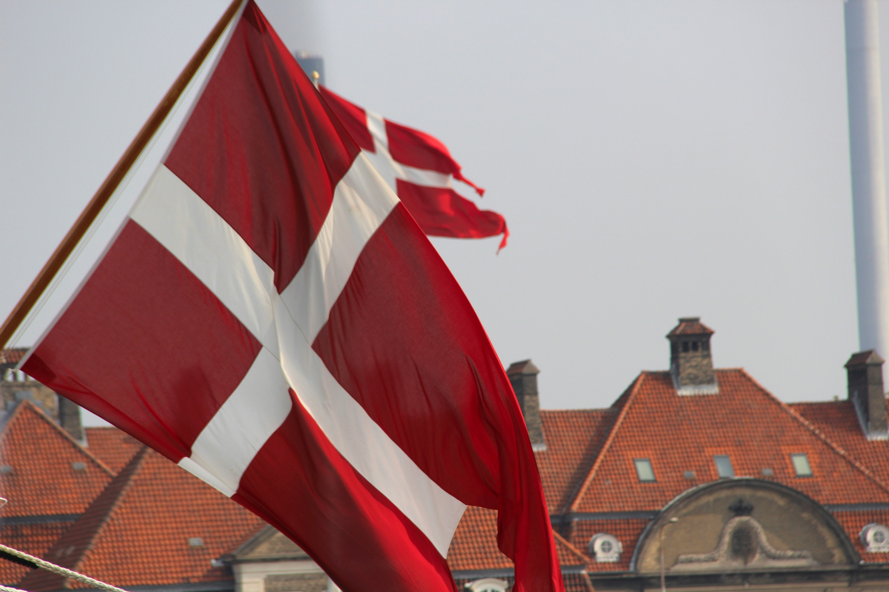
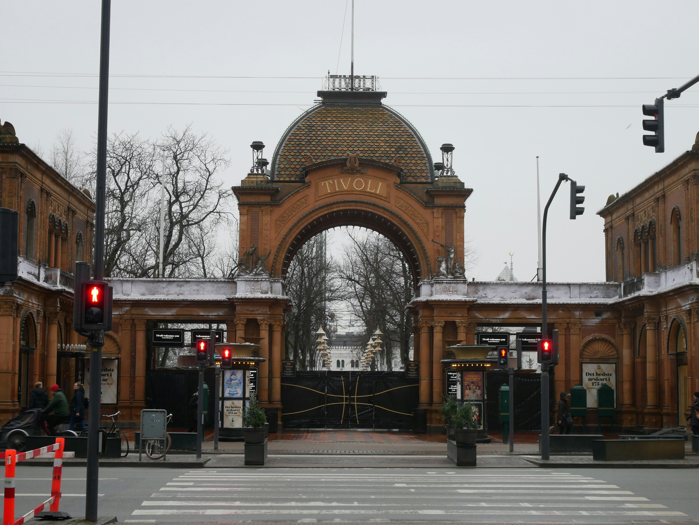

A Place I'd Like to Visit Someday
Copenhagen (København), Denmark
About
The capital of Denmark, Copenhagen, also known as København in Danish, is situated across a strait from Sweden, on the two islands of Zealand and Amager. Denmark is comprised of around 1400 islands, the largest of which are:
- Zealand
- North Jutlandic Island
- Funen
- Lolland
- Bornholm
Things To Do in Copenhagen
Palaces
Full of history, Copenhagen is home to both historic and royal residences, including:
- Amalienborg Palace
- Rosenborg Castle
- Christiansborg Palace
- Frederiksberg Palace
Tivoli Gardens
A famous attraction of Copenhagen, Tivoli Gardens is one of the oldest amusement parks in the world.
Cycling

Copenhagen is known for its biking culture as the city has five times more bicycles than cars; unsurprisingly, bike tours are a common way to get to know the city.